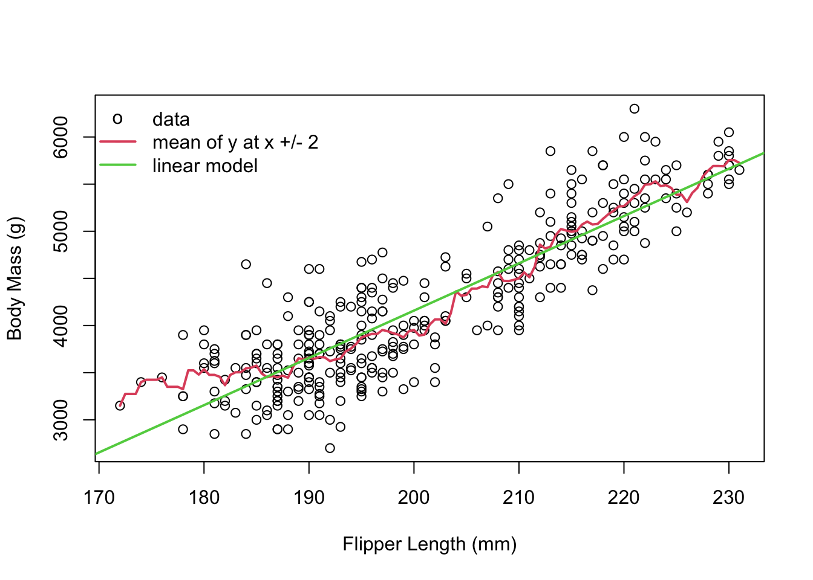
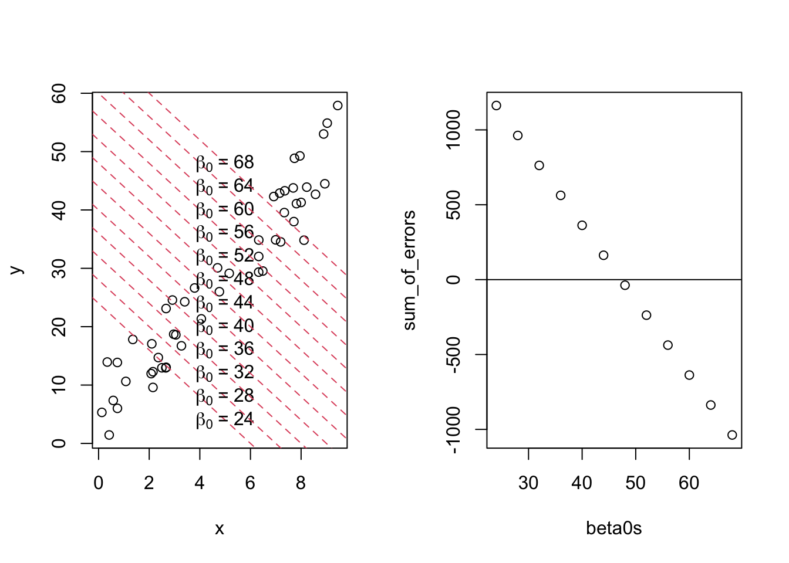
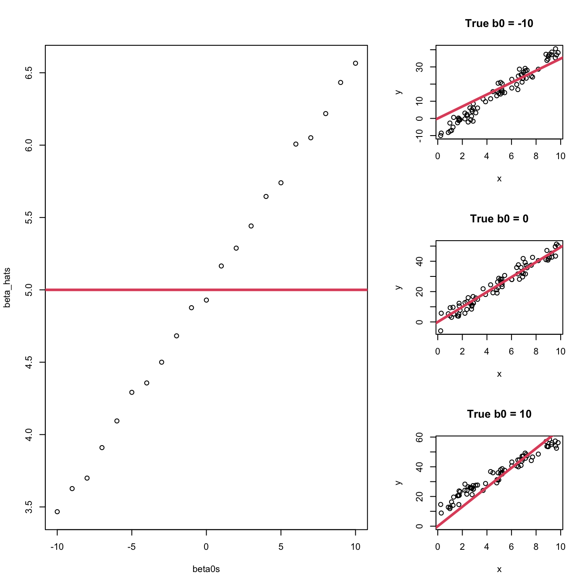

“All models are wrong, some are useful.” - George Box
This quote is something that you should tattoo on the inside of your eyelids so that you see it every time you blink.
… okay that’s a little extreme, but this quote perfectly encapsulates the required mindset for modelling. No model is ever going to perfectly describe complex phenomena. However, a good model will at least say something useful about the world!
Of course, it’s not a guarantee that a model is going to be useful. There are an infinite amount of useless models out there, and only a finite number of useful ones.
All Models Are Wrong, But Some Are Useful
Model: A mathematical equation that explains something about the world.
Gravity: 9.8 \(m/s^2\) right?
This is a model - it’s an equation that explains something in the world.
Varies across the surface of the Earth.
Varies according to air resistance.
Every additional cigarette decreases your lifespan by 11 minutes.
Very, very much wrong.
Very, very useful for health communication.
All Linear Models are Wrong, Too!
Show the code
library(ggplot2)theme_set(theme_bw())library(palmerpenguins)penguins <- penguins[complete.cases(penguins),]ggplot(penguins) +aes(x = flipper_length_mm, y = body_mass_g) +geom_point() +geom_smooth(method ="lm", se =FALSE, formula = y~x) +labs(title ="A line fits reasonably well",x ="Flipper Length (mm)",y ="Body Mass (g)")
Show the code
ggplot(mtcars) +aes(x = disp, y = mpg) +geom_point(size =2) +geom_smooth(method ="lm", se =FALSE, formula = y~x) +geom_smooth(method ="lm", se =FALSE, formula ="y~poly(x, 2)", colour =2) +labs(title ="A straight line misses the pattern",subtitle ="A polynomial might fit better",x ="Engine Displacement (1000 cu.in)", y ="Fuel Efficiency (mpg)")
The plot on the left shows penguins’ body mass against their flipper length. A straight line seems to fit pretty well. There’s still a fair bit of variance above and below the line so we can’t perfectly say exactly how much a penguin weighs if we only know their height, but the overall pattern is pretty straight.
On the right, we see the mtcars data again (definitely not the last time!), showing the fuel efficiency versus the engine displacement. The straight blue line is clearly missing important features of the data. We might be able to say that the fuel efficiency decreases with larger engines, but the line we’ve fit isn’t going to be a useful description of the true pattern. The red curve seems to fit better, but we’ll learn about a more useful model later in this course.
Some Linear Models are Useful
Show the code
xpred <-200ypred <-predict(lm(body_mass_g ~ flipper_length_mm, data = penguins),newdata =data.frame(flipper_length_mm = xpred))ggplot(penguins) +aes(x = flipper_length_mm, y = body_mass_g) +geom_point() +geom_smooth(method ="lm", se =FALSE, formula = y~x) +labs(title ="The height of the line is an okay prediction for Body Mass",x ="Flipper Length (mm)",y ="Body Mass (g)") +annotate(geom ="point", shape ="*", size =30, colour =2,x = xpred, y = ypred) +annotate(geom ="segment", colour =2, linewidth =2, linetype ="dashed",x = xpred, xend = xpred, yend =-Inf, y = ypred) +annotate(geom ="segment", colour =2, linewidth =2, linetype ="dashed",x =-Inf, xend = xpred, yend = ypred, y = ypred)
For a one unit increase in \(x_i\), \(y_i\) increases by \(\beta_1\).
If our model fits well and this is statistically significant, we can apply this to the population.
The estimated value of \(y_i\) when \(x_i=0\) is \(\beta_0\).
Not always interesting, but usually\(^*\) necessary.
Our prediction for \(y_i\) at any given value of \(x_i\) is calculated as: \[
\hat y_i = \hat\beta_0 + \hat \beta_1x_i
\] where the “hats” mean we’ve found estimates for the \(\beta\) values.
Side note: there are many models that are systems of equations - not just a single equation!
Notes on Notation
I will make mistakes, but in general:
\(Y\) is definitely a random variable (usually a vector) representing the response.
\(Y_i\) is also a random variable (not a vector)
I also use \(y_i\) as a random variable sometimes - context should make this clear!
Note that \(V(\underline y)\) may refer to the variance of a r.v. or the empirical variance of observed data. Context!
\(X\) is a matrix of covariates
Not a random variable!!! Capital letters could be either random or matrix (or both). I will specify when necessary.
I will avoid the notation \(X_i\).
Entries of \(X\) are labelled \(x_{ij}\).
The Mean (Expectation) of \(Y\) at any value of \(X\)
\[
E(Y|X) = X\underline\beta
\]
Show the code
peng <- penguins[complete.cases(penguins), ]x <- peng$flipper_length_mmy <- peng$body_mass_gx_range <-seq(min(x), max(x), by =0.5)y_mean <-double(length(x_range))bin_width <-2for (i inseq_along(x_range)) { y_mean[i] <-mean(y[x > x_range[i] - bin_width & x < x_range[i] + bin_width])}plot(x, y, xlab ="Flipper Length (mm)", ylab ="Body Mass (g)")lines(x_range, y_mean, col =2, lwd =2)abline(lm(y ~ x), col =3, lwd =2)legend("topleft", legend =c("data", "mean of y at x +/- 2", "linear model"), pch =c("o", "-", "-"), col =c(1, 2, 3), lwd =c(NA, 2, 2), bty ="n")

The plot above shows the height of a child against the average height of their parents.
The yellow dots are caclulated as follows: a “bin” of x-values is defined - in this case, a bin is all values between, say, 60 to 63, and the next bin might be 61 to 64, and the next is 62 to 65, etc. The average height of the y-values was found within each bin. The yellow dot is the average y height, plotted at the x-axis value in the middle of the bin.
The takeaway message of this plot is just how well the red line follows the yellow dots. A linear model can be seen as the average y-value for each x-value. This is a very useful way to think of linear models - they’re just fancy averages!
To fit the model, why not just find the one that minimizes the sum of the errors?
Answer: the errors can be negative, and the negatives can just cancel out the positives. If we just add the errors, then we can always get the sum to be 0 even if the model isn’t actually fitting well.
Here’s an example:
Show the code
set.seed(2112)x <-runif(50, 0, 10)y <-4+5* x +rnorm(50, 0, 4)par(mfrow =c(1, 2))plot(x, y)sum_of_errors <-c()beta0s <-seq(24, 68, 4)for (beta0 in beta0s) {abline(a = beta0, b =-4, lty =2,col =2)text(x =5, y = beta0 -4*5,labels =bquote(beta[0] ~"="~ .(beta0))) errors <- y - beta0 +4* x sum_of_errors <-c(sum_of_errors, sum(errors))}plot(beta0s, sum_of_errors)abline(h =0)

In the plot above, the value of \(\hat\beta_0\) is varied from 24 to 68 by 4 (24, 28, 32, …), with the value of \(\hat\beta_1\) fixed at -4. These lines are shown on the left.
The right plots the sum of the errors in these lines. The sum starts above 0, then at some point goes below 0. This means that we can have a slope of \(\hat\beta_1 = -4\), but still find an intercept that makes the sum of the errors equal to 0!
Least Squares
Goal: Minimize \(\sum_{i=1}^n\hat\epsilon_i^2=\sum_{i=1}^n(y_i - \hat y_i)^2\), the sum of squared errors.
This ensures errors don’t cancel out. It also penalizes large errors more.
Could we have used \(|\epsilon_i|\), or some other function that removes negatives? \(|ly|\)!
The expression \(|ly|\) represents the absolute value of “ly”. It’s a short form for “absolutely” that I’m trying to get the youths to use. It’s not going well.
We’ll see in other lectures and homework problems that we can define different errors, which prioritizes different aspects of the data. Squaring the errors means that large errors get even larger, so outliers are penalized more. Absolute errors penalize all values according to the size. You could also use exponential errors (\(\exp(\hat\epsilon_i)\)) if you really wanted to.
We use squared errors for one main reason: because the math is easy. (This is not true, but it’s a big selling point of squared errors.)
Least Squares Estimates - Start
To find the minimum of a function, we take the derivative and set it to 0! \[\begin{align*}
R(\underline \beta) \stackrel{def}{=}\sum_{i=1}^n\hat\epsilon_i^2 &= \sum_{i=1}^n(y_i - \hat y_i)^2 = \sum_{i=1}^n(y_i - \beta_0 - \beta_1x_i)^2\\
\implies \frac{dR(\underline\beta)}{d\beta_0} &= -2\sum_{i=1}^n(y_i - \beta_0 - \beta_1x_i)\\
\text{and }\frac{dR(\underline\beta)}{d\beta_1} &= -2\sum_{i=1}^n(y_i - \beta_0- \beta_1x_i)x_i = -2\sum y_ix_i + 2\beta_0\sum x_i + 2\beta_1\sum x_i^2
\end{align*}\]
Homework: complete the derivation.
Least Squares Estimates
I will assume that you can do the Least Squares estimate in your sleep (be ready for tests).
The final results are: \[\begin{align*}
\hat\beta_0 &= \bar y - \hat\beta_1\bar x\\
\hat\beta_1 &= \frac{\sum_{i=1}^n(x_i - \bar x)(y_i - \bar y)}{\sum_{i=1}^n(x_i - \bar x)^2}\stackrel{def}{=}\frac{S_{XY}}{S_{XX}}
\end{align*}\]
The textbook was written in 1998 and gives formulas to make the calculation easier to do on pocket calculators. You will not need a pocket calculator for this course.
If you’ve never done this before, try it! Make sure you get the same final answer, and then do it again without looking at your notes. This sort of derivation is a major part of any regression course.
An important point about these estimates is that we have not yet assumed normality. These are the values that minimize the squared errors. That’s it; we did nothing else, assumed nothing else, and apply this to nothing else.
Note: We’ll use these definitions of \(S_{XX}\) and \(S_{YY}\) a lot! Get used to them!
Let’s Add Assumptions
Assumptions allow great things, but only when they’re correct!
\(cov(\epsilon_i, \epsilon_j) =0\) when \(i\ne j\).
Implies that \(E(y_i) = \beta_0 + \beta_1x_i\) and \(V(y_i) = \sigma^2\).
\(\epsilon_i\stackrel{iid}{\sim} N(0,\sigma^2)\)
This is a strong assumption, but often works!
Interpretation: the model looks like a line with completely random errors. (“Completely random” doesn’t mean “without structure”!)
Mean of \(\hat\beta_1\)
It is easy to show that \[
\hat\beta_1 = \frac{\sum_{i=1}^n(x_i - \bar x)(y_i - \bar y)}{\sum_{i=1}^n(x_i - \bar x)^2} = \frac{\sum_{i=1}^n(x_i - \bar x)y_i}{\sum_{i=1}^n(x_i - \bar x)^2}
\] since \(\sum(x_i - \bar x) = 0\) (show this).
Homework: show that \(E(\hat\beta_1) = \beta_1\) (*Hint: use the fact that \(E(y_i) = \beta_0 + \beta_1x_i\) - don’t mix up the estimated values \(\hat\beta\) and the true values \(\beta\)!).
Variance of \(\hat\beta_1\)
\[
\hat\beta_1 = \frac{\sum_{i=1}^n(x_i - \bar x)y_i}{\sum_{i=1}^n(x_i - \bar x)^2}
\] can be re-written as \[
\hat\beta_1 = \sum_{i=1}^na_iy_i\text{, where }a_i = \frac{x_i - \bar x}{\sum_{i=1}^n(x_i - \bar x)^2}
\]
Thus the variance of \(\hat\beta_1\) is \[
V(\hat\beta_1) = \sum_{i=1}^na_i^2V(y_i) = ... = \frac{\sigma^2}{S_{XX}} \stackrel{plug-in}{=} = \frac{s^2}{S_{XX}}
\]
Confidence Interval and Test Statistic for \(\hat\beta_1\)
The test statistic can be found as: \[
t = \frac{\hat\beta_1 - \beta_1}{se(\hat\beta_1)} = \frac{(\hat\beta_1 - \beta_1)}{s/\sqrt{S_{XX}}} \sim t_\nu
\]
Since this follows a \(t\) distribution, we can get the CI: \[
\hat\beta_1 \pm t_\nu(\alpha/2)\sqrt{\frac{s^2}{S_{XX}}}
\]
2.3 Exercises
Good textbook questions: A, K, O, P, T, U, X (using data(anscombe) in R), Z, AA, CC. Note that all data sets in the textbook are available in an R package found here.
Find the OLS estimates of \(\beta_0\) and \(\beta_1\) for the model \(y_i = \beta_0 + \beta_1x_i + \epsilon_i\).
Prove that the point \((\bar x, \bar y)\) is always on the estimated line for simple linear regression.
Find the OLS estimate of \(\beta_1\) for the model \(y_i = \beta_1x_i + \epsilon_i\).
Comment on these estimates compared to the previous question. What happened to \(\bar x\) and \(\bar y\)?
Investigate what happens to \(\hat\beta_1\) if the true intercept is not 0.
Solution
We’re trying to minimize: \[
\sum_{i=1}^n(\epsilon_i)^2 = \sum_{i=1}^n(y_i - \beta_1x_i)^2
\] Setting the derivative to 0 (and putting on our hats, since we’re now working with the value of \(\beta_1\) that minimizes the equation, not the true value of \(\beta_1\)): \[
0 = -2\sum(y_i -\hat\beta_1x_i)x_i = -2\sum(y_ix_i) + 2\hat\beta_1\sum x_i^2\implies\hat\beta_1 = \frac{\sum x_iy_i}{\sum x_i^2}
\]
Note that this is the exact same formula as the estimate for \(\hat\beta_1\) in the model with an intercept, except with \(\bar x = \bar y = 0\). In the intercept model, the line is guaranteed to pass through the point \((\bar x, \bar y)\) (prove this!). In the intercept model, the line is guaranteed to pass through the point \((0, 0)\).
In the following simulation, the true slope is the exact same no matter what. However, the true intercept varies. When \(\beta_0 = 0\), we get the true value for \(\beta_1\). When the true intercept is negative, the estimate for the slope is too low. When \(\beta_0\) is positive, the slope is too high. The plots on the right show why this is the case.
For further homework, change the range of x (to be far from 0 or to cover 0), the value of beta1 (try small, large, and negative values), and the standard deviation of e (small and large) and see if you can guess the pattern before you run the code.
n <-75x <-runif(n, 0, 10)beta1 <-5beta_hats <-c()beta0s <-seq(-10, 10, by =1)for (beta0 in beta0s) { e <-rnorm(n, 0, 3) y <- beta0 + beta1*x + e beta1_est <-sum(x * y) /sum(x^2) beta_hats <-c(beta_hats, beta1_est)}layout(matrix(c(1,1,2,1,1,3,1,1,4), ncol =3, byrow =TRUE))plot(beta0s, beta_hats)abline(h =5, col =2, lwd =3)beta0 <--10e <-rnorm(n, 0, 3)y <- beta0 + beta1*x + eplot(y ~ x, main ="True b0 = -10")abline(a =0, b =sum(x * y) /sum(x^2), col =2, lwd =3)beta0 <-0e <-rnorm(n, 0, 3)y <- beta0 + beta1*x + eplot(y ~ x, main ="True b0 = 0")abline(a =0, b =sum(x * y) /sum(x^2), col =2, lwd =3)beta0 <-10e <-rnorm(n, 0, 3)y <- beta0 + beta1*x + eplot(y ~ x, main ="True b0 = 10",ylim =c(0, max(y)))abline(a =0, b =sum(x * y) /sum(x^2), col =2, lwd =3)

Given that \(\hat\beta_1 = \frac{\sum_{i=1}^n(x_i - \bar x)(y_i - \bar y)}{\sum_{i=1}^n(x_i - \bar x)^2}\), find \(E(\hat\beta)\).
Complete the derivation of \(V(\hat\beta_1)\).
Suppose that we fit the model without an intercept, but there actually is an intercept term. That is, suppose \(y_i = \beta_0 + \beta_1x_i +\epsilon_i\), but our estimator is what was found in Question 2, and find \(E(\hat\beta_1)\). Hint: it’s not\(\beta_1\)!